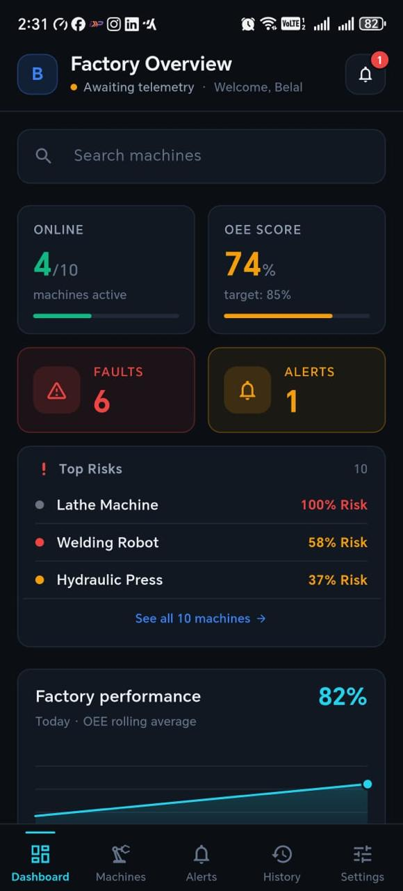
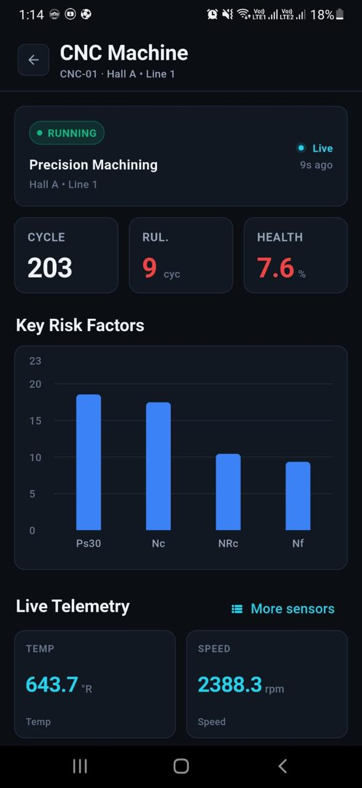
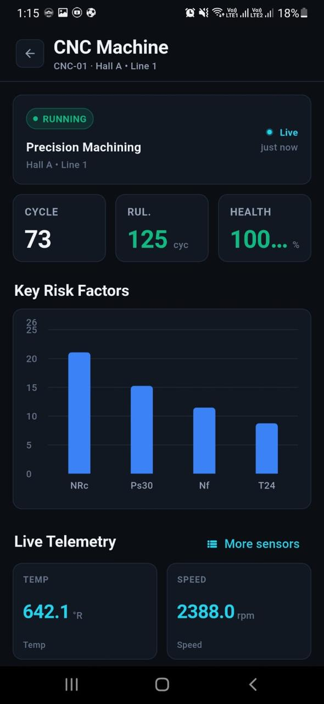
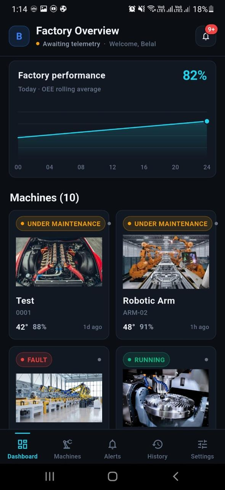
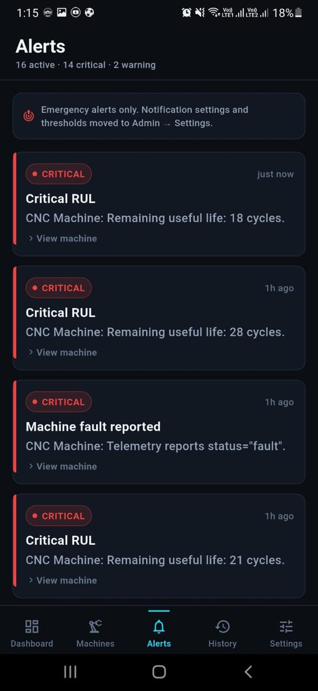
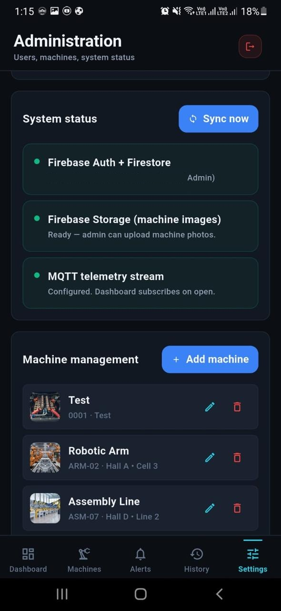

A real-time factory monitoring app that pairs live sensor telemetry with an edge AI pipeline — predicting when a machine will fail before it does, and explaining exactly why.
This page shows screenshots from the running app. The system depends on a local sensor simulation and AI pipeline that aren't reachable from a public URL, so this is a walkthrough rather than a link you can click into.
The dashboard rolls ten machines up into a single OEE score, flags the highest-risk equipment by name, and charts performance across the day — so a floor manager knows where to look before walking the floor.

This CNC machine's remaining useful life has dropped to 9 cycles. The chart underneath isn't decoration — it's SHAP output, ranking the exact sensors (Ps30, Nc, NRc, Nf) driving that prediction, pulled live over MQTT.

The same machine view minutes earlier — remaining useful life at 125 cycles, health at 100%. The risk chart still runs continuously; it just has nothing urgent to report yet.

CNC lathes, robotic arms, and full assembly lines sit side by side, each carrying its own live status — running, under maintenance, or faulted — so nothing gets lost in a single flat list.

Sixteen active alerts, fourteen of them critical. Each one links straight back to the machine that raised it — an operator never has to guess which alert belongs to which line.

A system-status panel confirms Firebase Auth, Firestore, Storage, and the MQTT telemetry stream are all actually connected — not assumed to be working, checked.
